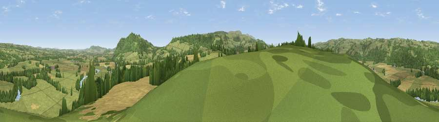

Viewpoint near Whitney
#10838 in England · top 34% of its area beats it · near WhitneyThe view, rendered

A 360° render of this exact spot computed from the terrain model, tree cover and land cover — summer colours, afternoon light, calibrated against photographs of famous viewpoints. Real trees, hedges and buildings will differ in detail.
The panorama
Grey silhouette: terrain skyline in each direction (720 bearings, Earth curvature and refraction included). Dashed green: skyline with trees (+15 m) and buildings (+8 m) as obstacles. Blue strip: how far the ground is visible on each bearing.
Where the view opens
Wedge length = distance to the farthest visible ground on that bearing (vegetation-aware). Rings at 10, 25 and 50 km.
What fills the view
55% grassland · 22% cropland · 21% woodland · 1% water
Angular shares of the visible panorama (visual magnitude), not map area. Landscape diversity 0.47 (0–1 Shannon).
Key numbers
More beautiful places nearby
The staircase of upgrades: each row has a higher view potential than everything closer. Driving times are estimates from straight-line distance, calibrated against real road routing — check an actual route before setting out.
| Place | Direction | Drive | Score |
|---|---|---|---|
| Merbach Hill | ESE · 3 km | ~8 min | 81.1 |
| Viewpoint near Craswall | SSW · 9 km | ~18 min | 81.5 |
| Garway Hill | SE · 26 km | ~43 min | 84.6 |
| Herefordshire Beacon | E · 49 km | ~70 min | 85.8 |
| Millennium Hill | E · 49 km | ~70 min | 86.9 |
| Worcestershire Beacon | E · 50 km | ~71 min | 87.1 |
| Viewpoint near Bossington | SSW · 103 km | ~128 min | 88.3 |
| Selworthy Beacon | SSW · 104 km | ~128 min | 88.7 |
52.10549, -3.06544 · source: screening · position refined by local search. Computed location — check access rights before visiting.